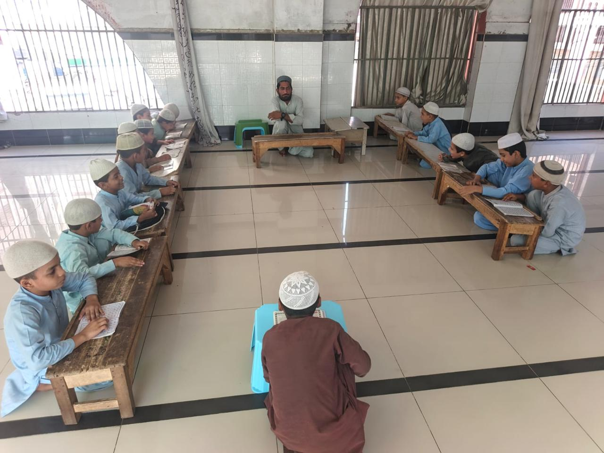
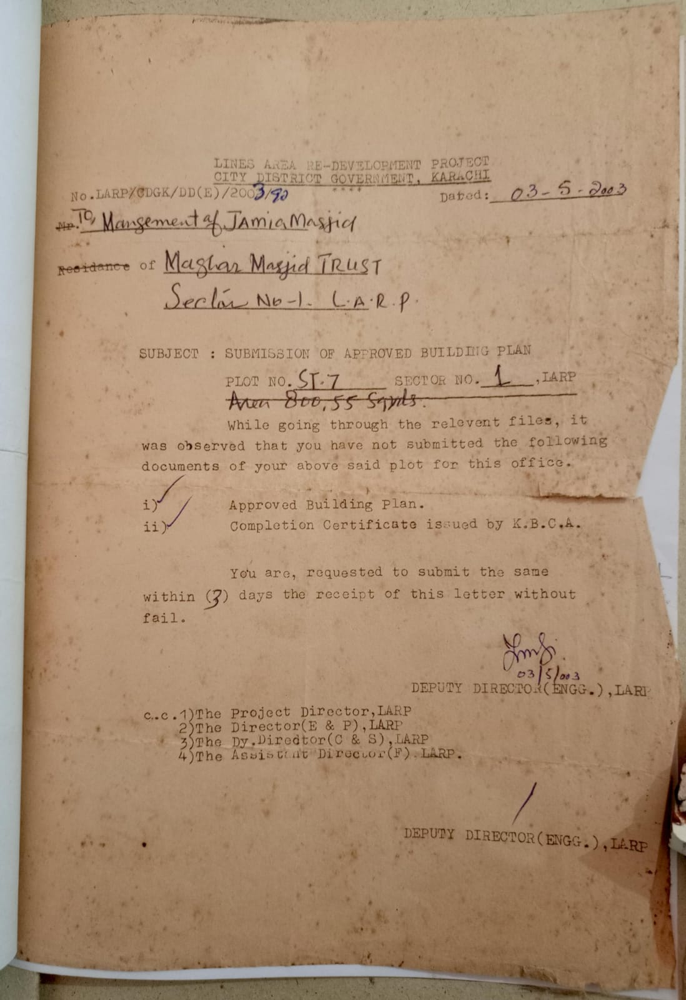

A Legacy of Service to Sacred Quranic Knowledge
The roots of our institution trace back to the establishment of Jamia Masjid Muhajir Makki in 1954 in Karachi. Conceived as a sanctuary of worship and community reflection, the premises soon expanded into an educational nucleus for children and youth of the surrounding neighborhoods.
In 1996, the visionary scholar Hazrat Maulana Inayatullah (may Allah enlighten his resting place) embarked on a coordinated educational mission with his devoted associates. Their objective was clear: to establish a high-caliber madrasa committed to Quranic memorization, Tajweed phonetics, and moral Tarbiyah.
With the blessed patronage of the venerable senior Pakistani scholar Qutb al-Aqtab Hazrat Maulana Saleemullah Khan (may Allah have mercy on him), the reconstruction of the mosque and adjacent madrasa was initiated on September 11, 2001, bearing the title Madrasa Mahd al-Irshad al-Islami.

Daily Halqa instruction rooted in time-tested pedagogy
Verified Historical Milestones
Documented chronological records derived from authenticated institutional archives and official government approvals.
Establishment of Jamia Masjid Muhajir Makki
The foundation stone of Jamia Masjid Muhajir Makki was laid in Karachi, establishing an enduring center for congregational prayers, spiritual guidance, and local community gatherings.
Scholarly Educational Initiative
Hazrat Maulana Inayatullah (RA), alongside his learned companions and associates, initiated systematic Islamic classes, laying the groundwork for a formal madrasa dedicated to Quranic sciences.
Foundation by Hazrat Maulana Saleemullah Khan (RA)
The eminent senior scholar Qutb al-Aqtab Hazrat Maulana Saleemullah Khan (RA) laid the reconstruction foundation with his own blessed hands, inaugurating the adjacent religious school formally named Madrasa Mahd al-Irshad al-Islami.
Official LARP Karachi Government Allocation
The City District Government Karachi Lines Area Re-Development Project (LARP) formally recorded and processed the site documents for Plot No. ST-7, Sector No. 1, comprising an area of 800.55 square yards under the management of Jamia Masjid / Mazhar Masjid Trust.
Madrasa Building Foundation
By an auspicious coincidence, the formal foundation for the dedicated madrasa building was once again blessed by the hands of Hazrat Maulana Saleemullah Khan (RA), marking the expansion into multi-story residential and study facilities.
Passing of Founder & Leadership Transition
On Friday, January 17, 2025, Hazrat Maulana Inayatullah (RA) answered the divine call and departed from this transient world. The administrative mantle and ongoing stewardship of the madrasa was subsequently entrusted to his respected brother, Hazrat Maulana Abidullah, who leads the institution as Mohtamim.
The Madrasa Today
Today, Mahd al-Irshad al-Islami operates with full vitality across both male and female educational wings, providing unconditional holistic care for resident and orphan scholars.
320+ Male Students
Engaged across foundational Nazira, complete Hifz memorization, and foundational Islamic disciplines, cultivating disciplined daily recitation habits.
100+ Female Students (Banat)
A dedicated girls' wing providing Quranic literacy, Tajweed, and Islamic ethical values to cultivate pious, educated female role models in society.
80 Residential Boarders & 18 Orphans
All lodging, three daily nutritional meals, seasonal clothing, and comprehensive medical care are fully assumed by the madrasa without charging the students.
Official Archival Documentation
Transparency and authenticity are foundational to our institution. Pictured here is the authenticated 2003 Karachi City District Government Lines Area Re-Development Project (LARP) official correspondence regarding the 800.55 square yard premises for Plot ST-7, Sector 1, under Mazhar Masjid Trust.
Click the preview document on the right to examine the archival document in high resolution.
